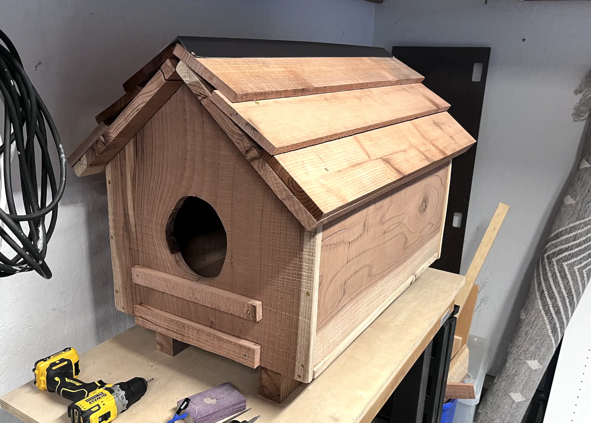
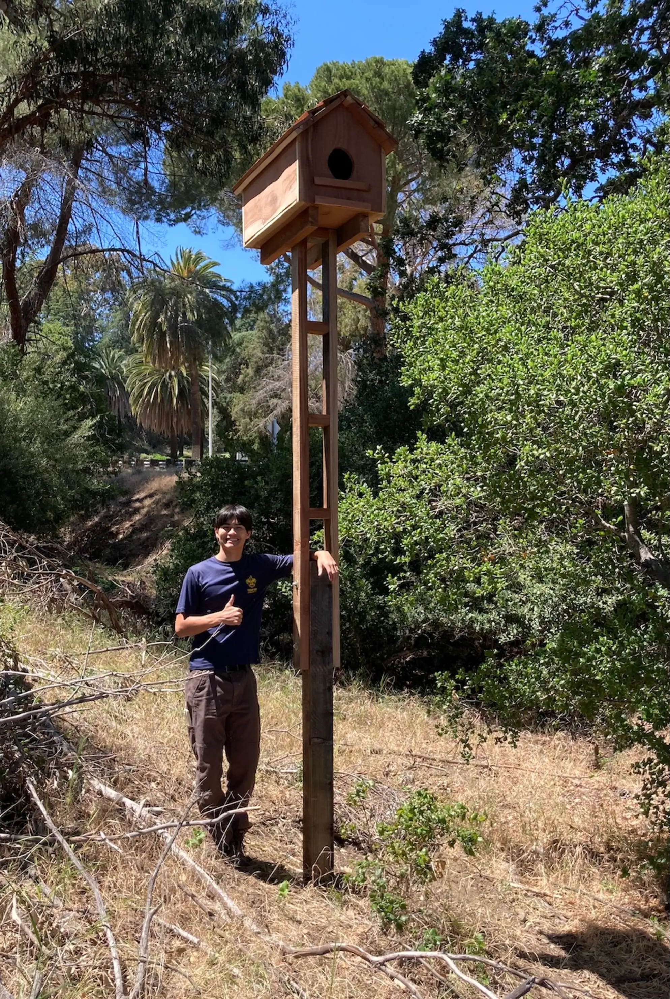

About Me
Hi, I'm Ted—a high school student, Scout, woodworker, and coder with a passion for combining technology and conservation.
This project began as my Eagle Scout service project: designing and building a smart barn owl nest box at the Livermore Area Recreation and Park District Ranger Station. The nest box includes a camera that will livestream the owls, allowing visitors to experience local wildlife up close. The Parks Department is working to bring the livestream online, which will be up soon.
This site analyzes barn owl livestreams using computer vision and AI. It detects activity, tracks behavior over time, and transforms hours of video into meaningful insights about owl activity. My goal is to create free, open tools that help wildlife organizations better understand their nest boxes while making the data more engaging and accessible to the public.
Looking ahead, I'd also like to develop educational resources that use this data to teach students about wildlife conservation, engineering, and computer science.
Thank you for visiting!
Ted Brzustowicz
tbrzusto@gmail.com
Owl Box Build


Owl Box Installed at LARPD Ranger Station

My Blueprint and Cutsheet


Acknowledgements
This project would not have been possible without the support of LARPD Ranger Seth Eddings; Assistant Scoutmaster Trex Donavan, who generously donated the wood for the owl box and provided mentorship throughout the build and installation; and the many adult leaders and Scouts of Troop 939 in Livermore, whose ideas, time, and hard work helped bring the smart owl box to life.